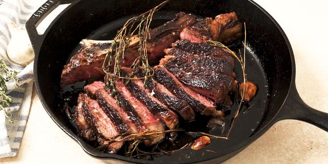

Ribeye Steak At Home

Description
Learn how to cook Ribeye Steak perfectly like they
do in restaurants. This recipe will teach you how you
can do it from home.
Ingredients
- Ribeye Steak 8-10 oz sliced 1-1.5 inch thick
- butter 2 oz
- Fresh Rosemary
- Fresh Thyme
- 2-3 peeled garlic cloves
- Avocado/Olive oil
- Salt & Pepper
Steps
-
We need to get our meat to room temperature
first. Take your meat out of the fridge for about
30-45 minutes.
-
Once the ribeye is room temperature, pat dry with a paper towel.
Season with salt & pepper.We need to heat up our skillet(iron cast skillet preferred) to the point
that is smoking to sear the surface of the steak. We are going to cook the
steak for a total of 5 minutes(medium rare to medium).
Cook it or under cook it a minute longer depends on how
you want your steak cooked.
-
Once hot enough, put enough cooking oil to cover the skillet.
We are going to sear each side of the steak for about a minute.
(note: keep flipping each side for a minute to cook it evenly on
both sides)
-
Lower the heat to medium and put the butter,garlic,rosemary,
thyme into the skillet. Let the butter melt and baste the steak
with the sauce. Remember to keep flipping.
-
After a total of 5 minutes or however long you cooked it, let the steak rest
outside of the heat and let sit for 10 minutes.
-
Slice meat along the grain for a more chewable texture and Enjoy
your perfectly cooked steak.